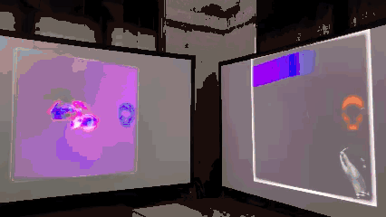

07 / Selected Work
Maker Faire 2024

This study uses blue particles and movement to promote CADRE SO during Maker Faire 2024.
Back to projects ↗07 / Selected Work

This study uses blue particles and movement to promote CADRE SO during Maker Faire 2024.
Back to projects ↗